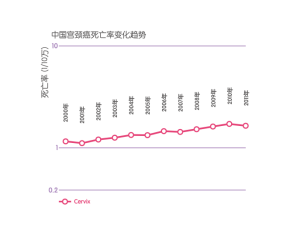
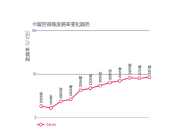

不被女性接受的“第一”，细思极恐！
有女人的地方就有江湖，有江湖的地方就有排名……试问哪个女生不想成为学校里的第一精英，职场上的第一骨干，同辈中的第一榜样，爱豆身边的第一粉头……可惟独，有个“第一”她们却避之不及，那就是让她们谈之色变的宫！颈！癌！
我们都知道，宫颈癌是最常见的妇科恶性肿瘤之一，位居女性生殖系统三大恶性肿瘤（宫颈癌、卵巢癌、子宫内膜癌）之首。
这个第一可不是凭空得来的哦，有数据有真相。
2015年，我国宫颈癌发病人数约为10万。其中城市为53200例，农村为45700例，平均每天约274人被诊断为宫颈癌。
在这些患者当中，45~59岁年龄组新发病例最多，为45700例，其次为30~44岁年龄组和60~74岁年龄组，分别为28200例和19000例。
除了发病率高，宫颈癌在我国的死亡率也不容小觑。因宫颈癌死亡人数约30,500例，其中城市为13600例，农村为16900例，平均每天约84人因宫颈癌而死亡。
宫颈癌发病率和死亡率高已经很恐怖了，比这更恐怖的是，近年来，中国宫颈癌的发病率和死亡率均呈增长趋势。更更恐怖的是，跟我国情况不同，发达国家宫颈癌的发病呈下降趋势。之所以会出现这种反差，原因是多方面的，可能是在统计时，我国还没有HPV疫苗；我国年轻女性的HPV感染增加；我国宫颈癌筛查项目覆盖率低，报告中仅有1/5的女性曾经做过1次宫颈筛查……

各位正享受青春大好时光的女孩子们，面对宫颈癌这样一个夺命杀手，不要再坐以待毙啦！趁早行动起来，积极预防，将生命更多放在追求美好的“第一”上！
Ref:
1. Chen WQ, et al. CA Cancer J Clin. 2016 Mar-Apr;66(2):115-32.
2. GSK内部文件